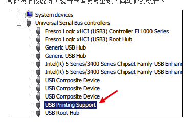
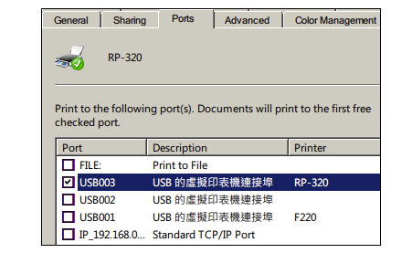

請問一下，我買了一條USB轉LPT25母的線使用，但我的win8.1抓不到出單機（型號是POSIFLEX PP-7000II）,請問是線的問題還是出單機不支援win8.1呢?
出單機（型號是POSIFLEX PP-7000II）抓不到
1 個回答
您好
理論上應該是支援的,安裝此類線材有三個重點
1.如果您是使用WIN8 64位元,請確認此線材是否支援win 64位元的windows?(相容性較差的舊款可能不支援64位元)
2.插上usb線材後,電腦的裝置管理員應該會有usb printing support(USB虛擬列印埠)
如果出現此裝置 表示線材沒問題,如果沒出現 極有可能是線材本身的問題
印象中此類線材做的比較好的廠商是登昌恆

3.由於LPT是USB模擬出來的,安裝完線材後,並不會有LPT1 LPT2等埠號windows也不會主動去抓印表機,此時應該直接安裝印表機的驅動程式,在控制台的印表機應該會產生出一台印表機,然後手動去設置印表機的連接埠
連接埠是以USB001 USB002等代號表達 ,理論上插上線材USB就會自動出現,所以在印表機的連結埠應該勾選USB000x的號碼

更多的資料請參考下面資料網頁
如何進入windows 8的裝置管理員?
如何設定印表機連接滬號?
以上資料請參考